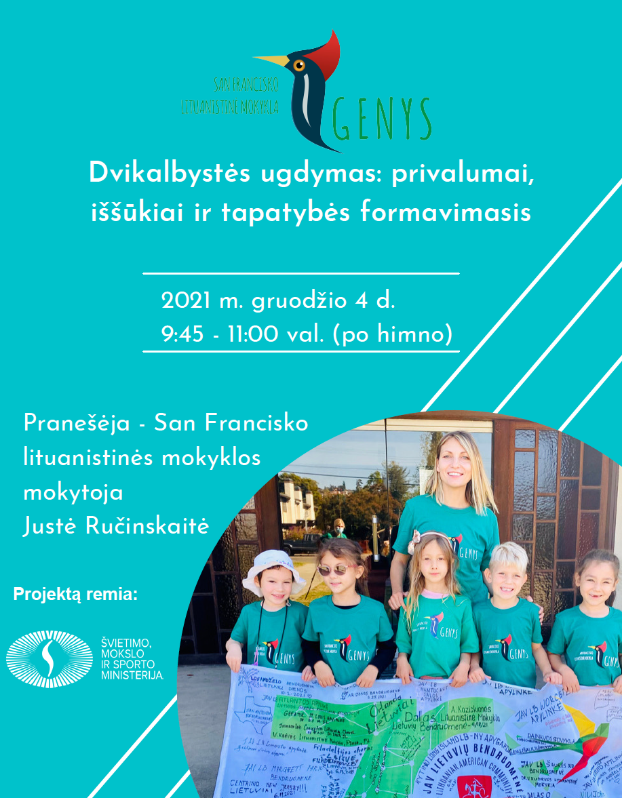
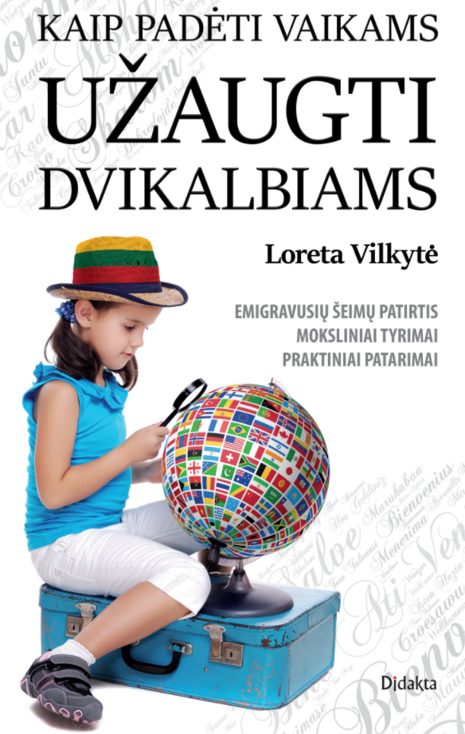

TĖVAMS
Viskas šeimoms vienoje vietoje
Čia rasite registraciją, kalendorių, budėjimus, informaciją apie mokesčius ir būdus prisidėti prie mokyklos gyvenimo.
Bendruomenės veiklos archyvas
2024-2025 mokslo metų tėvElių veikla
Didžiulis dėkui Tėvų Komiteto Pirmininkei, Virginijai Valverde, už nenuilstamą darbą SF Genio Mokinių labui.
Atverti 2024-2025 mokslo metų tėvElių veikla ↗
Atverti 2024-2025 mokslo metų tėvElių veikla ↗
NES MOKYKLA – TAI MOKINIAI, MOKYTOJAI IR TĖVAI!



Dvikalbystės Seminaras
Mieli tėveliai ir mokytojai,
Norime pristatyti ir pakviesti visus į psichologės ir mokytojos, Justės Ručinskaitės, parengtą seminarą apie dvikalbystės ugdymą pavadinimu „Dvikalbystės ugdymas: privalumai, iššūkiai ir tapatybės formavimasis".
Kada? Šeštadienį, Gruožio 4 d.
- 9:45 - 11:00 val (po himno)
Kur? San Francisko Lituanistinėje Mokykloje „Genys"/United Methodist Church Patalpose:
19806 Wisteria Street
Castro Valley, CA 94546
Lauksime visų tėvelių, mokytojų ir lietuvių bendruomenės narių!
SF Genio Komanda
Naudingos nuorodos
naudingos nuorodos – atverti šaltinio vaizdą
